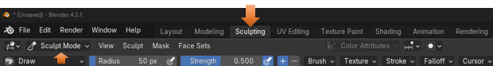
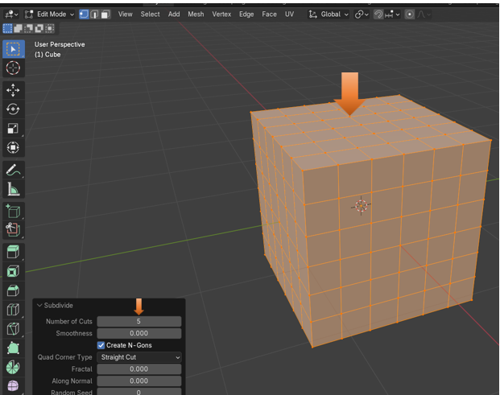
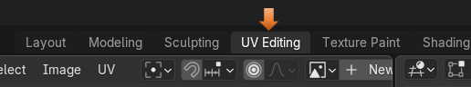
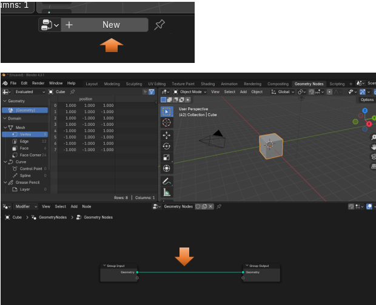

~ The Tippy - Top Menu~
1/13/2025
The last section of the Tippy-Top Menu Bar.
The Tippy-Top Menu
If you take a look at the top Menu in Blender, like everything else this thing is quite massive, and can be a bit over whelming when you first take a look at it. So, we will be breaking things down a bit here.
Most menus that you come across will have things like File, Edit, and help. But if you look at what Blender has in its top menu, you start to realize that this is no simple program.
Here you have the menu in two pieces because it is just that big.
The Blender Icon Menu Item
When you look at the first strip of menu items above, which is the first half of the menu, you will see that it starts out with some very familiar menu items. Except for one thing. If you click on that Blender icon that sits at the left of the menu items, you will see that you are presented with even more sub-menu items. The image on the right below shows you the menu items from the Blender icon.
The Splash screen will bring back that Welcome Screen that sat in the middle of the viewport, when you first opened the program. If you click on the About Blender, it will tell you about the program such as the version menu. Install Application Template, is interesting, and as you become more advanced, you may not find the way that this interface is setup is all that beneficial to your own workflow. This allows you to download other Interface configurations from Blender, and if you want to know more about this, you can go to the Blender documentation here to learn more.
You will find that System deals with some rather advanced stuff in Blender, and way beyond this beginner tutorial
The File Menu
Most things in the file menu are fairly familiar, there are a few extra things in there. But for now I am just introducing you to the different sections of this menu.
The Edit Menu
Here you have an undo menu, which can be pretty important for getting back to a step before you thoroughly screwed up what you are working on.
The Render Menu
Ok, now Render is pretty interesting because this is something that you do not find in just any old program menu. To render something in Blender means to take a 3D scene that you have created, and to generate a 2D image or video from it. What you are pretty much doing here is to take a picture of the scene to see how it will react to light and the material that you put on it, so that you can get a better idea of how realistic your results will be. It is taking your 3D world, and turning it into a picture that you can look at and study on your computer screen.
The Window Menu
The window menu is interesting, you can do a few different things to the window that is open on the screen. You can do things like, open a new window, a new viewport or even take a screen shot of your viewport.
The Help Menu
The help menu is a lot like other programs help menus. It will give you information such as Tutorials, tell you about this version, or enable you to report a bug.
The Workspaces
This next section of the menu, is all about being able to get to different workspaces, or modes. This can be very helpful, because each workspace, enables you to work on very specific sections of you 3D modeling work flow.
The Layout Menu
The Layout menu is where you will be when you are in Object mode. From object mode, you are working on your entire object. This means you can move it around or resize it, but if you want to be able to reshape it in any real detailed manner, you are either going to have to move it into the Edit Mode, or the Sculpting Mode, which you can also get to from this top menu.
The Modeling Menu
The Modeling Menu is your Edit mode. You can get to this workspace by selecting it from the Top Menu or the dropdown here.
We will go into the Edit Mode workspace a lot more when we get to that specific tutorial in this series. But for now, just know that it enables you to have little dots on your object called vertices, in which you can further manipulate the shape of your object.
When you go back into object mode, it becomes one piece again, but its shape has been altered
The Edit tools
Edit mode comes with its own set of tools, in which you can use to move different parts of your object around.
The Sculpting Menu
The Sculpting Menu will bring you into the Sculpting workspace, which has all sorts of tools called brushes that you can use to mold your object into the shape that you want it to go.

The Sculpting Brushes
The sculpting workspace comes with all types of brushes.
So, many brushes that you could become lost. So, there is a little search box to find the brush that you want. Here I looked for the Grab brush, where I can grab certain sections of the box and move it around.
You must be directly on a vertex to move it. So, you need to look for that yellow dot.
Creating more Vertices
Notice that with this boxes having a rather limited number of vertices, that we really cannot do a whole lot of anything with our pitiful attempts at sculpting.
We can actually stay in the Sculpting Workspace and take it into Edit mode from here.
You might have to reselect the cube by hitting the A key on your keyboard.
Right click on the box to come up with its context submenu.
When the subdivide option box pops up, it will have 1 cut in it by default. Just bringing up the option box will make this change to the cube.
Change the number of cuts in the Subdivide box to 5.

However, this still might not be enough to see any real smooth changes in the Sculpting workspace. Here we set the Number of cuts to 50.
Now go back into Sculpting mode. Change the size of your brush like this.
Now put your brush on the cube and pull slightly to the right. It is much easier to find one of those vertices now, since they are all over the cube with our subdivide cuts.
The UV Editing Menu
This one is workspace is interesting as it will unwrap your object and put it into a 2D workspace. It looks like a pattern and reminds me of sewing.

You will find that just clicking on the Menu button to go into the workspace will automatically unwrap your object, where you can work with it. Here we see it has unwrapped the cube and put it into its own view panel to the left.
The Texture Painting Menu
You will see that the Texture Painting Workspace uses this unwrapped version of your object to be able to paint on it. You can see that this workspace comes with a lot of tools associated with it.
The Shading Menu
The Shading Workspace is interesting and where you can start working with nodes to get things done. In the shading workspace, we work with materials and how they interact with the object.
The nodes look like little property panels that are connected together in a separate viewport at the bottom of the viewport. Here you will see the two default nodes, which are Principled BSDF node, and the Material Output node, which enables you to see on the screen what you are doing.
The Animation Menu
The animation workspace is where you can start to animate your object. So, it is actually doing something on the screen other than just sitting there.
You have your timeline at the bottom of the viewport where you can work with adding and editing frames for your objects.
To do this you must add a key frame. To add a key frame, you need to select the object in the viewport and have your mouse on the object. You do not want your mouse on the time, line or you will not add any keys to the timeline.
Now go to the first frame, then come away from the time line, and put your mouse on the object in the viewport. and press the letter I on the keyboard to add a key frame. Remember to add a key frame, you must have your mouse on the object and not in the timeline.
Now click on another Time segment on the timeline
Click on the cube in the viewport and move it.
It is showing red in the location box, because you have not clicked on the letter I on the keyboard to create a keyframe. In the location for X we changed it from 0 to 3
Now Hit the letter I to create the keyframe at this location remember to keep the mouse in the viewport and not on the timeline.
After clicking on the I on the keyboard, the numbers all change to golden and the dots are showing on the 200 mark on the timeline.
Now you can play it and the box will move.
Set the cursor back on the 0 mark on the time line and hit the play button at the bottom
The Rendering Menu
You will see that when you enter the rendering Workspace that it will be empty. That is because we really haven’t rendered anything yet.
So, let’s render something. Go to the 3rd item in the top menu, named menu and click on Render Animation.
Now since it is rendered, we see the box in the Rendering workspace.
The Compositing Menu
The compositing workspace in Blender is where you can combine multiple rendered images, video clips and effects to make a final enhanced image or video clip. You can use the node- based system that is similar to the node -based system that was shown to you in the Shading Workspace, above. This can be thought of to be somewhat like how you would fine tune an image in Photoshop, except that in Blender we are using nodes to achieve some of the final touches.
Click the Box that says Use Nodes to use the node system and two default nodes will show up.
This is an example of what a composition would look like.
The Geometry Nodes Menu
Basically, this node system is where you can create more complex 3D objects by using math, or geometry.
When you click on the New button in the bottom view menu, you will get your first two main nodes to start your project.

The Scripting Menu
This section is where you can incorporate code into your projects. Click the New button at the top of the workspace to begin writing code.

The last section of the Tippy-Top Menu Bar.
I really have never used this section of the menu bar myself. But it is essentially a way in which you can select the active scene and view a specific layer inside that scene. So, you can manage different variations of your work inside of a single file. The different layers can be access through the dropdown menu.
Well, that finishes out the top menu bar. It was quite a long journey just for a menu bar, but we finally got through it.